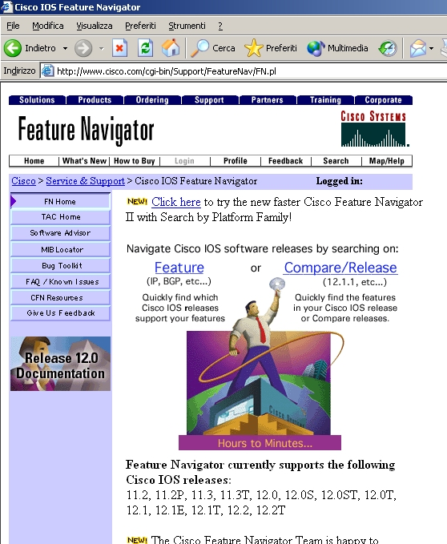
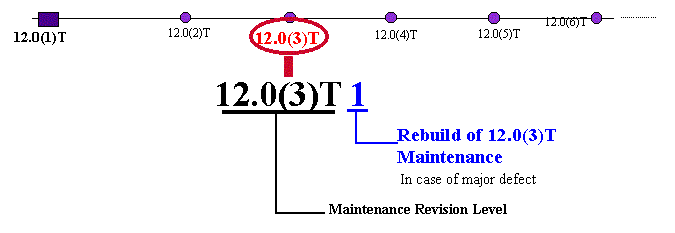

L'IOS (Internetwork Operating System), non è altro che il sistema operativo dei router Cisco, IOS che sono in costante evoluzione ed in costante miglioramento. Spesso le nuove release introducono migliorie o nuove funzioni, quindi a volte e' necessario aggiornare tale software, per poter utilizzare a pieno il proprio apparato. Tutti gli IOS sono disponibili per il download dal sito Cisco; poiche' l'utilizzo di tale software è subordinato al pagamento di una licenza, è necessario avere delle credenziali (login e password) autorizzate a tale download. Per poter quindi ottenere tale aggiornamento è d'obbligo l'acquisto di uno Smartnet, un contratto di assistenza, che preveda questa possibilità. L'unica altra alternativa è rivolgersi al proprio rivenditore, che, dietro il pagamento della relativa licenza d'uso, provvederà a fornire il CD-Rom contenente l' IOS richiesto.
Per conoscere le caratteristiche e funzionalità di un determinato IOS, bisogna registrati sul CCO (http://www.cisco.com/register) dove è possibile accedere al Function Navigator presso l'URL http://www.cisco.com/go/fn. Questo utilissimo tool ci permette di risalire alle funzionalità di un IOS dato il suo nome (es. c2500-jos56i-l.121-7.bin) oppure, data una feature che ci interessa, ricavare quali IOS in quali versioni e per quali piattaforme la supportano.

Da qui possiamo decidere il tipo di ricerca da effettuare; andando su Compare/Release possiamo confrontare e avere varie informazioni riguardo un IOS in base al tipo di feature (IP, IP PLUS ...), quali la dimensione richiesta di flash e memory ram per installarla, il nome del file, e se in possesso di opportuni accessi scaricare direttamente l'IOS.
Come si è già accennato precedentemente, gli IOS si diversificano tra loro per modello di router e relativa feature. Ora passiamo ad esaminare come in base al nome dell'immagine dell'IOS possiamo determinare queste informazioni.
IOS
Release
Le versioni di IOS si distinguono in tre classi principali:
- General Deployment: rappresenta un software di sistema considerato stabile
ed esente da bug;
- Early Deployment: questo tipo di release offre oltre alla correzione dei bug
della precedente release nuove features come per esempio il supporto di nuovo
hardware o il miglioramento di alcuni protocolli;
- Maintenance Release: sostitisce la General Deployment ed è rappresentata
dai vari rilasci di manutenzione (es. per la versione 12.0 avremo le Maintenance
12.1 12.2 ecc.).
Convenzione
nomi
Il sistema operativo Cisco IOS viene solitamente caricato, o aggiornato copiando
la relativa immagine tramite un TFTP
server nella memoria FLASH
del router. E' necessario conoscere le caratteristche del proprio apparato al
fine di installare la corretta immagine. Il nome di ogni IOS segue uno schema
preciso: Platform-Features-Run-time memory and compression format.
Il significato è il seguente:
Platform: è il modello di router per cui il sistema operativo è
stato sviluppato (Es. Cisco 2500, Cisco 7000, Cisco 12000)
Features: sono le caratteristiche come per esempio i protocolli di routing supportati,
la possibilità di fare NAT o di creare connessioni VPN ecc.;
Run-time memory and compression format: questo valore è indicato da due
lettere, la prima identifica in che area di memoria verrà eseguita l'immagine
del sistema operativo, e la seconda il formato di compressione;
Lettere o gruppi di lettere sono assegnate alle releases della Technology ED degli IOS. Queste lettere quando sono in prima posizione definiscono gli IOS Cisco ED:
A
= Access Server/Dial technology (per esempio, 11.3AA)
D = xDSL technology (per esempio, 11.3DA)
E = Enterprise feature set (per esempio, 12.1E)
H = SDH/SONET technology (per esempio, 11.3HA)
N = Voice, Multimedia, Conference (per esempio, 11.3NA)
S = Service Provider (per esempio, 12.0S)
T = Consolidated Technology (per esempio, 12.0T)
W = ATM/LAN Switching/Layer 3 Switching (per esempio, 12.0W5)
Dalle figure seguenti si può notare come per ogni release esistano diversi livelli revisionati dello stesso IOS e varie rebuild:

Convenzione utilizzata per definire il nome dell'immagine è data dalla seguente tripla:
PPPP
= Piattaforma
FFFF = Caratteristiche
MM = Esecuzione in memoria e formato di compressione
In base alle seguenti tabelle all'indirizzo http://www.cisco.com/warp/public/620/5.shtml risaliamo al significato delle varie sigle.
Per esempio, analizzando il nome di questo IOS c820-k8osv6y6-mz.122-2.T4.bin sappiamo che:
c820
= nome della piattaforma (serie 800 e 820)
k8; o; s; v6; y6 = codifica minore o uguale a 64bit; firewall;
sorgente di scambio dell'instradamento; protocollo voce H.323; converte varianti
IP
m; z = l'immagine si avvia nella RAM; compresso con zip
122-2.T4 = release principale 12.2, revisione 2, tecnologia
consolidata, rebuild di manutenzione 4 di 12.2(2)T
Per l'IOS c7200-ajs56-mz:
c7200
= Router Cisco Serie 7200
a = supporto protocollo APPN;
j =supporto di caratteristiche Enterprise;
s =supporto di NAT,ISL,VPDN/L2F
56 = supporto di crittografia a 56 bit
m = esecuzione in RAM
z =file compresso con Zip